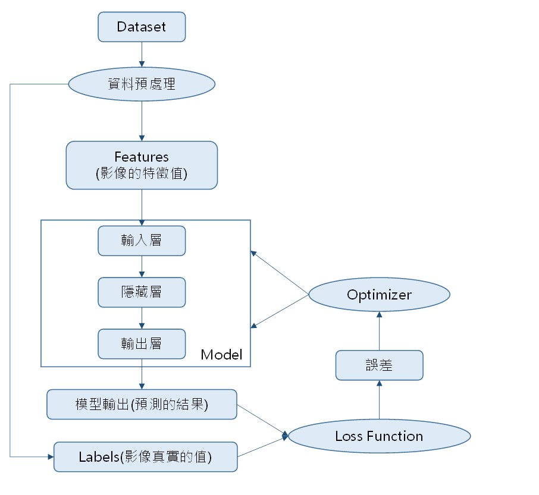
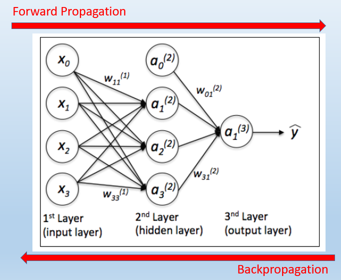

當我們建立模型後，就必續進行訓練。
反向傳播法(BackPropagation)，簡單來說就是”從錯誤中學習”，是訓練人工神經網路的常見手法，並且與最優化方法Optimizer(例如梯度下降法)結合使用。
反向傳播是一種監督式學習方法，必須輸入Features和Label。
基本流程

權重更新Weight Update
主要分成兩個步驟
- Loss Function計算誤差 : 使用Loss Function計算，模型輸入(預測的結果)與Labels(影像真實的值)之間的誤差值。
- Optimizer更新權重與偏差 : 依照誤差值，更新神經元連結的權重(Weight)與偏差(Bias)，盡量使Loss Function的誤差值最小化。
- 關於Loss Function 和 Optimizer介紹，可詳見上一篇初談Deep Learning(1) - Neural Network
SGD梯度下降法:
- 通熟的講法 : 一個在山上的人正在找到山谷最低點(即試圖找到Loss Function的極小值)。因為大霧能見度低，所以看不到下山的道路，他必須利用局部信息來找到極小值。他觀察當前位置山的陡峭程度(梯度)，然後沿著最大方向前進。使用此方法找到谷底。
- 關於SGD下降訓練公式介紹，可詳見上一篇初談Deep Learning(1) - Neural Network
理論細節
Forward-Propagation & 非線性Activation Functions的必要性
- 每一層的 output Y 就等於 前一層的 input X 乘以權重(W)， 即 y = sum(w * x)，這個過程就是 Forward Propagation
- 簡單來說，如果只是把神經元簡單連接在一起，不加入非線性處理，那麼最終得到的仍然是線性函數，這就無法描述各種複雜的現象。
- 所以，我們會在其中加入非線性激活函數，讓神經網絡有很強的表達能力，進而Fit複雜的數據。
- 通過數學可以證明著名的通用逼近定理(Universal Approximation Theorem)

非線性Activation Functions
- 一般使用的Activation Functions有很多類別，每一種Activation Function都有自己的數學定義和意義，在選擇上，要根據各自Activation Function的
- 可以參考激勵函數 Wiki
- 目前最常用的非線性激活函數是ReLU函數，他有幾個優點
- ReLU的運算非常簡單、快速
- ReLU可避免”梯度消失”
- 注意ReLU在 x > 0 時才會有非0輸出，而在 x <= 0 時輸出 0，所以ReLU更類似於生物神經元的工作原理，因為生物神經元需要一定的刺激才會被激活。
- 使用ReLU往往能帶來比使用Sigmoid和tanh時更加的網絡效能。
梯度的計算公式
- 神經網絡的訓練，需要運用Back-Propagation (BP)
- BP和SGD是不同層面的概念
- BP負責計算梯度 ∂LOSS / ∂w
- SGD負責從梯度訓練網絡
梯度消失、梯度爆炸
- 梯度消失(gradient vanishing) : 梯度有可能在傳播過程中絕對值越來越小(直到變成0)，其會使的網絡的訓練停滯不前。
- 梯度爆炸(gradient explosion) : 梯度有可能在傳播過程中絕對值越來越大(直到發散)，其會使得網絡不穩定，性能崩潰。
- 相關Case
- 採用sigmoid或tanh非線性，在輸入的絕對值很大的時候，會出現“飽和(saturation)”，即導數趨近於0，根據梯度的公式，會造成梯度消失。
- ReLU再輸入為負數的時候，導數為0，這稱為“死ReLU”(dying ReLU)，往往是學習速率過大時出現。
- 如果發現網絡的訓練性能很差，值得做的事情就是觀察網絡內部梯度的流動情況，看是否出現梯度消失或梯度爆炸。
- 改善梯度可通過多種技巧
- Batch規模化(BN)
- 殘差網絡(ResNet)
- 梯度截斷(Gradient Clipping)，即人工將過大的梯度減少，或引入一定的梯度懲罰(gradient penalty)